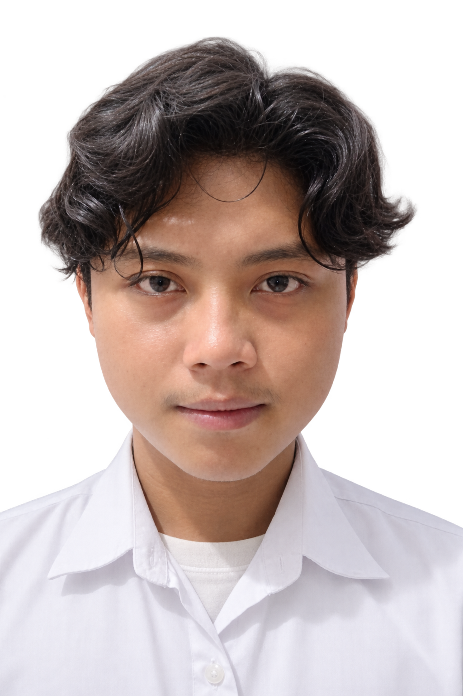
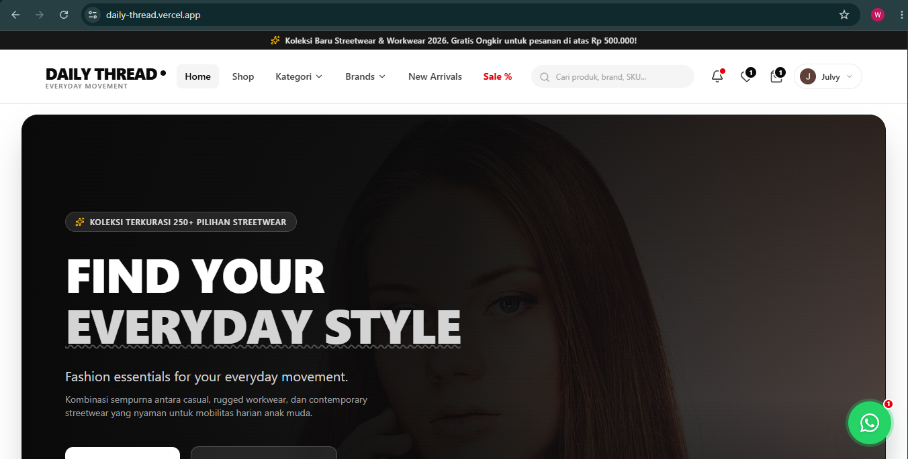
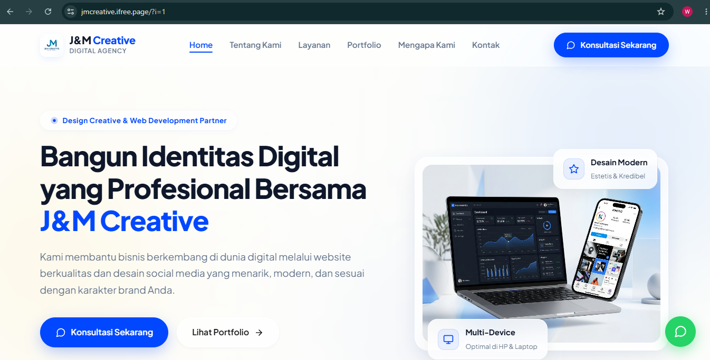
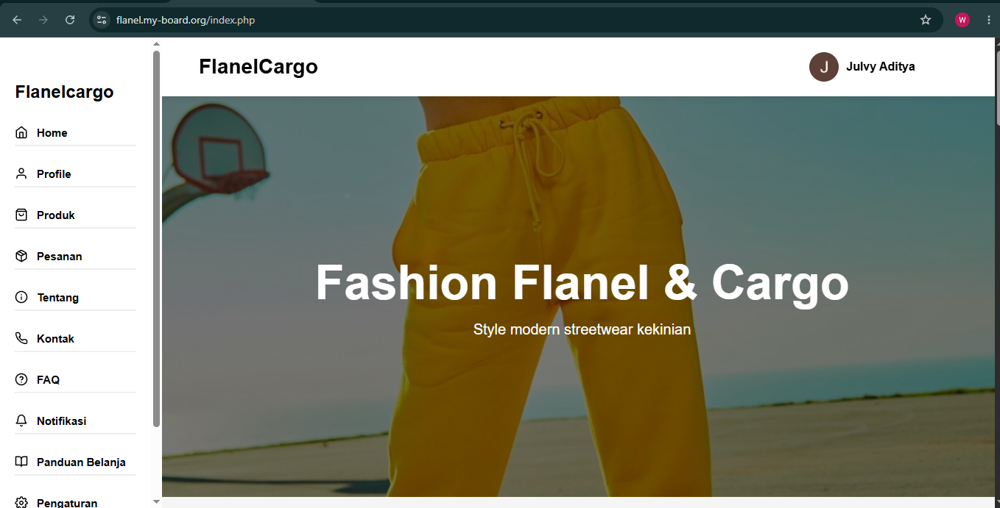
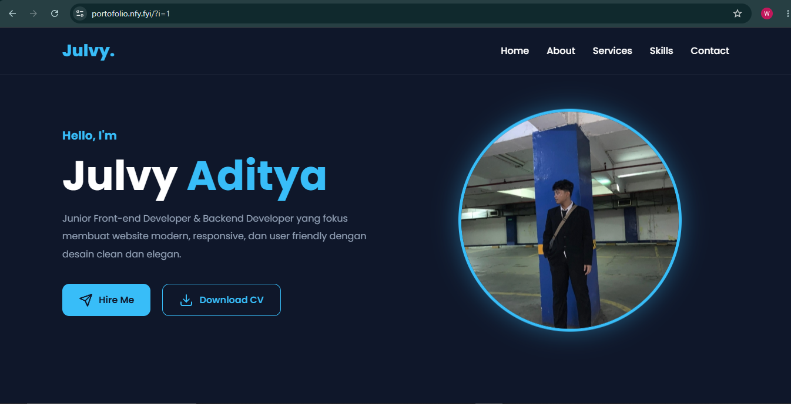
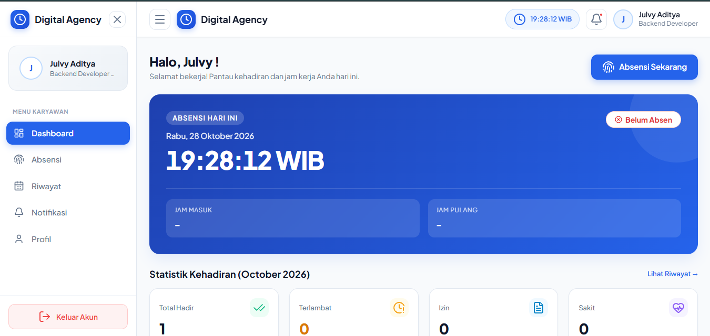
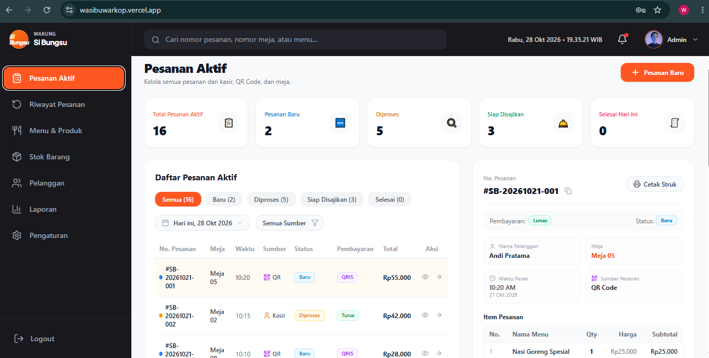

Daily Worker
SPX Shopee
Menjalankan tugas operasional harian sesuai arahan kerja, menjaga ketelitian, serta menyesuaikan diri dengan ritme kerja tim.
Junior Web Developer yang membangun kemampuan pemrograman secara mandiri melalui praktik langsung. Berbekal latar belakang Teknik Komputer dan Jaringan, saya tertarik mengembangkan website sekaligus memahami infrastruktur komputer dan jaringan.
Letakkan foto PNG transparan kamu di assets/julvy.png

Mengenal latar belakang, perjalanan belajar, dan pendidikan saya.
Saya adalah lulusan SMK jurusan Teknik Komputer dan Jaringan yang memiliki ketertarikan pada web development dan teknologi komputer.
Saya membangun kemampuan pemrograman dari nol melalui praktik mandiri di rumah. Proses belajar tersebut mencakup pembuatan halaman web, pengembangan backend, pengelolaan database, hingga mempelajari framework untuk membangun aplikasi yang lebih terstruktur.
Saya terbiasa belajar secara mandiri, mencoba menyelesaikan masalah teknis, dan mengembangkan kemampuan melalui proyek praktik. Saya ingin terus berkembang serta memperoleh pengalaman profesional sebagai web developer.
Lulusan SMK — TKJ
Fokus pada dasar komputer, sistem operasi, instalasi jaringan, dan troubleshooting.
Web Development · Backend Development · Database · Computer Networking
Pengalaman kerja di beberapa bidang yang membentuk kedisiplinan, komunikasi, dan tanggung jawab.
Menjalankan tugas operasional harian sesuai arahan kerja, menjaga ketelitian, serta menyesuaikan diri dengan ritme kerja tim.
Melayani pelanggan, membantu proses penyajian, menjaga kebersihan area kerja, serta melatih komunikasi dan pelayanan.
Menangani input data pelanggan, menjaga ketelitian pencatatan, serta membantu operasional administrasi sesuai prosedur.
Membantu proses persiapan dan pengolahan makanan, menjaga kebersihan area kerja, serta mengikuti prosedur kerja yang berlaku.
Kemampuan yang saya pelajari dan kembangkan melalui praktik web development dan Teknik Komputer dan Jaringan.
Catatan: Persentase berikut merupakan indikator awal penilaian mandiri, bukan hasil tes resmi. Sesuaikan berdasarkan kemampuan dan proyek yang benar-benar dikuasai.
Framework PHP untuk membangun aplikasi web terstruktur, routing, controller, model, autentikasi, migration, dan integrasi database.
Pemrograman backend menggunakan PHP, pengolahan form, session, autentikasi dasar, CRUD, dan koneksi ke database.
Menyusun struktur halaman, mendesain antarmuka, membuat layout responsif, serta mengatur tipografi, warna, dan komponen website.
Dasar logika pemrograman, manipulasi DOM, event handling, validasi form, dan interaksi antarmuka.
Perancangan tabel, relasi data, query SQL, operasi CRUD, serta integrasi database dengan aplikasi berbasis PHP.
Pemasangan kabel LAN, penyusunan konektor RJ45, pengujian kabel menggunakan LAN tester, dan dasar konektivitas jaringan lokal.
Instalasi sistem operasi, konfigurasi dasar, pengelolaan perangkat, instalasi aplikasi, dan penanganan masalah umum sistem.
Pemeriksaan koneksi, identifikasi gangguan kabel dan konfigurasi IP dasar, serta penelusuran masalah konektivitas jaringan lokal.
Beberapa proyek yang dapat ditampilkan sebagai bukti praktik dan pengembangan kemampuan. Klik gambar atau judul untuk membuka website proyek.

Website toko online dengan halaman produk, keranjang, database, dan alur transaksi. Sesuaikan dengan fitur proyek sebenarnya.

Website profil perusahaan untuk menyampaikan informasi bisnis, layanan, keunggulan, dan informasi kontak.

Proyek website fashion dengan katalog produk dan tampilan yang dirancang untuk memudahkan pengunjung menjelajahi koleksi.

Website portofolio untuk menampilkan identitas, kemampuan, hasil karya, dan informasi kontak secara terstruktur.

Tempat menampilkan aplikasi web yang pernah dibuat, seperti sistem informasi, pengolahan data, atau aplikasi dengan autentikasi.

Tambahkan website lain yang pernah dibuat. Sertakan tujuan proyek, kontribusi pribadi, dan teknologi yang benar-benar digunakan.
Saya terbuka untuk berdiskusi mengenai web development, proyek website, kesempatan kerja, maupun kolaborasi yang relevan dengan kemampuan saya.